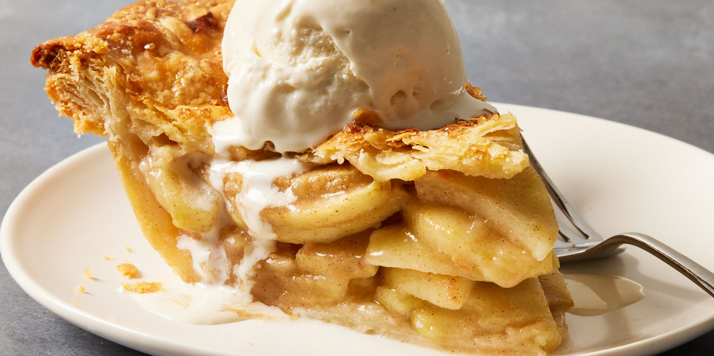

Apple Pie Recipe

Tips for the best apple
- Granny Smith: firm, tart and the gold standard for baking
- Golden Delicious: balanced sweet/tart flavor
- Jonagold: sweetness amplified by baking
- Honeycrisp: ultra-crisp and sweet
- Braeburn: crisp and doesn't get mushy
- Pink Lady: sweet and tart apples, hold their shape
Ingredients
- 1 Recipe For Pie crust
- 2 1/4 lbs Granny Smith Apples, peeled, cored 6-7 apples (7 cups thinly sliced)
- 1 1/2 tsp cinnamon
- 8 Tbsp unsalted butter
- 3 Tbsp all-purpose flour
- 1/4 cup water
- 1 cup granulated sugar
- 1 egg , + 1 Tbsp water, for egg wash
Instructions
- Make the pie crust recipe and chill per instructions while preparing the filling. Preheat oven to 425˚F.
- Melt butter in a medium saucepan over medium heat. Whisk in 3 Tbsp flour then simmer for 1 minute, whisking constantly. Whisk in 1/4 cup water, 1 cup sugar and bring to a boil. Reduce heat and continue simmering 3 minutes, whisking frequently then remove from heat.
- Peel, remove cores and thinly slice 7 cups of apples and place them in a large bowl. Sprinkle the top with 1 1/2 tsp cinnamon and toss to combine. Pour the sauce over the apples and stir to coat the apple slices.
- Sprinkle your work surface with flour and roll out bottom pie crust to a 12" diameter circle. Wrap it around your rolling pin to transfer it to the 9" pie plate. Add apple mixture, mounding slightly in the center and being careful not to get the filling on the edges which would make it difficult to seal.
- Roll second crust into an 11" round and cut into 10 even thickness strips using a pizza cutter. Arrange strips in a woven lattice pattern over the top (see video tutorial). Beat together 1 egg and 1 Tbsp water and brush the top with egg mixture.
- Bake at 425˚F in the center of the oven for 15 minutes. Reduce the heat to 350˚F and continue baking another 45 minutes or until apples are soft and filling is bubbling through the vents.* Rest at room temp 1 hour before serving.
For more information on the recipe click here!